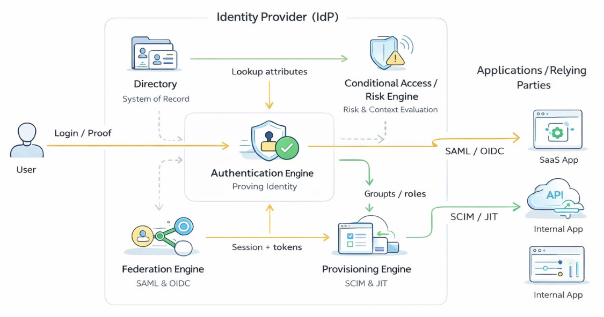
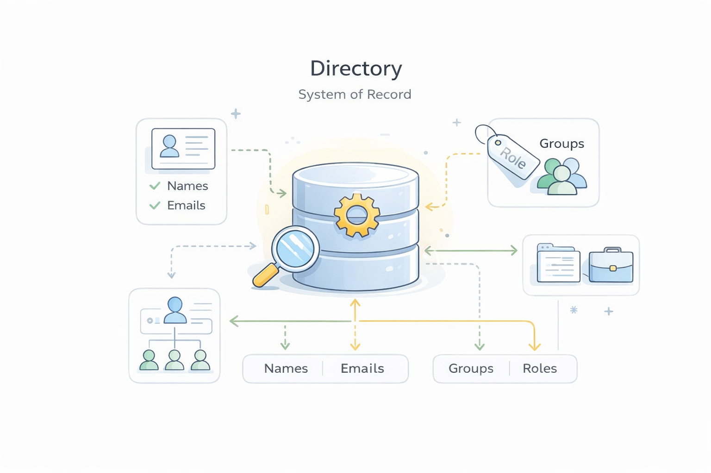
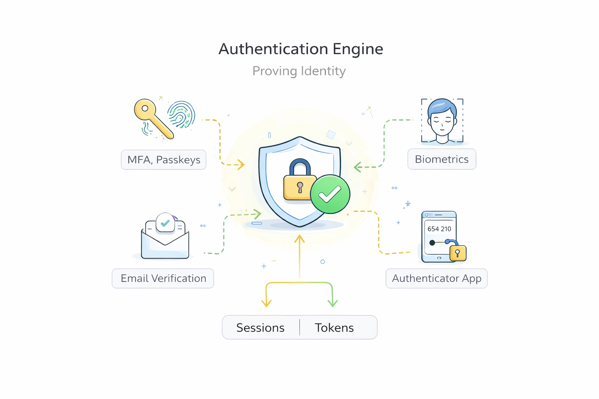
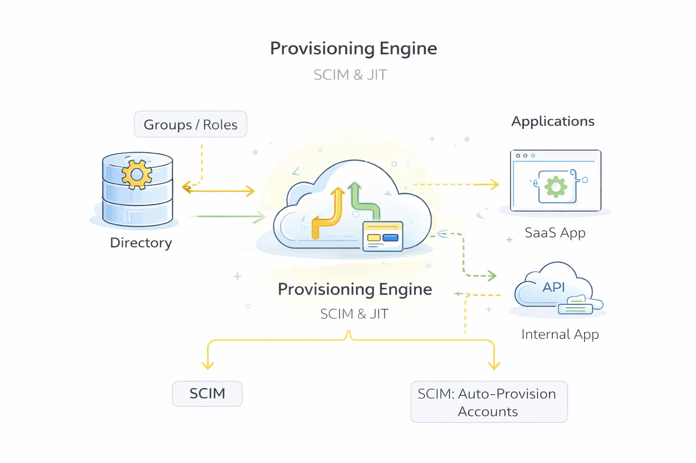
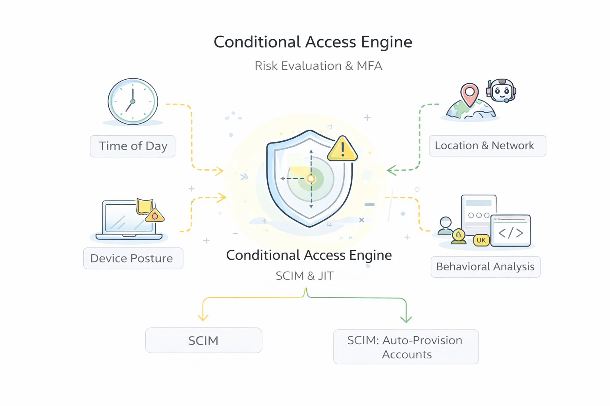

Build Your Own Identity Provider
In this article, we're going to walk through how to build your own identity provider from scratch. Not because you're expected to replace the systems that power large enterprises, but because designing one is one of the best ways to truly understand how modern single sign-on and identity-as-a-service platforms work under the hood.
If you work in or around an enterprise today, you've almost certainly interacted with an identity provider — even if you didn't call it that. It's the system that signs you into dozens of tools with a single login, that asks you for multi-factor authentication, that quietly decides whether your request looks "normal," and that somehow makes all of your applications just know who you are. From the outside, this feels simple. Under the surface, it's anything but.
That complexity exists for a reason. Identity providers sit at the center of how organizations operate. They don't just authenticate users; they orchestrate identity across a wide range of applications, APIs, devices, and cloud environments. They have to work for many different kinds of people — employees, contractors, partners, and customers — all with different levels of access and different security expectations. In practice, this means an identity provider is responsible for verifying who you are, determining what you should be able to access, creating accounts on your behalf in other systems, and detecting risky or suspicious behavior along the way.
If you've ever wondered how all of that actually fits together, that's exactly what this article is meant to unpack.
Rather than treating identity providers as black boxes or focusing on any specific vendor, we'll break them down into their core components and explain what each one does. At a high level, those components include a directory that serves as the system of record for who exists, an authentication engine that supports different ways of proving identity, a federation layer that lets applications trust authenticated users using protocols like SAML and OpenID Connect, provisioning systems that automatically create and manage accounts in downstream applications, and a layer of conditional access or risk evaluation that uses contextual signals — such as device, location, timing, and anomalous behavior — to decide whether and how authentication should proceed.
In the sections that follow, we'll take each of these pieces one by one. We'll explain the problem each component is solving, how it typically works, and how it interacts with the rest of the identity stack. The goal isn't to build a production-grade identity provider, but to give you a clearer mental model of how these systems operate — so that when you use, design, or secure them, you're doing so with a much deeper intuition about what's really happening beneath the surface.
Identity Provider Architecture
If you strip away vendor branding and implementation detail, most modern identity providers share a common conceptual architecture. They are not single-purpose tools, but collections of cooperating components that together manage identity from creation to authentication to access enforcement. Different products emphasize different capabilities, and some include additional features such as governance, lifecycle workflows, or analytics. Still, a consistent pattern shows up across cloud, hybrid, and on-prem systems.
At the center of this pattern is the idea that an identity provider acts as an identity control plane rather than just a login service. It coordinates several distinct functions that, taken together, allow organizations to know who someone is and what they should be able to do across many different applications.
First is the directory.
This is the system of record for identity — the place that answers the basic question, who exists? It stores not only names and emails, but also how people are organized: teams, roles, groups, and relationships. Everything else in the identity system ultimately depends on this authoritative source.
Next is the authentication engine.
This layer is responsible for proving that a person is who they claim to be. In practice, that means supporting multiple authentication methods — passwords, MFA, passkeys, or biometrics — and deciding when each should be used. Rather than a single check, authentication is best understood as an orchestration process that adapts to users and context.
Sitting alongside authentication is the federation engine.
Once a user has successfully authenticated, the identity provider must translate that event into something other applications can trust. Using standards such as SAML and OpenID Connect, federation turns an internal login into a portable, cryptographically protected identity statement that downstream applications can accept without ever seeing the user's credentials.
Running in parallel is provisioning.
If authentication answers "who are you right now?", provisioning answers "what accounts should exist for you elsewhere?" When someone joins a company, changes roles, or leaves, the identity provider can automatically create, update, or disable accounts in connected applications instead of relying on manual administration.
Finally, many systems include a conditional access or risk layer.
Rather than treating every login as equal, this component evaluates contextual signals — device posture, location, timing, or anomalous behavior — before allowing authentication to complete. Depending on the risk, it may allow access, require stronger verification, or block the request entirely.
Together, these five pieces — directory, authentication, federation, provisioning, and conditional access — form a simple but powerful mental model for how identity providers are structured. Not every provider implements each piece in exactly the same way, and some will offer more capabilities while others remain lightweight. But thinking in terms of these components makes it much easier to understand what identity providers actually do and how their parts fit together.
In the next section, we'll begin our deeper dive with the directory, the foundation on which the rest of the identity system is built.
The Directory
At the most fundamental level, every identity provider needs a place that answers a deceptively simple question: who exists? That place is the directory. Everything else in an identity system — authentication, federation, provisioning, and risk evaluation — ultimately depends on the directory being reliable, consistent, and up to date. If the directory is wrong, incomplete, or out of sync, the rest of the identity stack will behave unpredictably no matter how sophisticated it is.
In real-world deployments, identity providers take two common approaches to directories. Some organizations already have a well-established external directory — often something like Active Directory, LDAP, or a cloud HR system — that serves as the primary system of record for employees and contractors. In those cases, the identity provider typically connects to and synchronizes with that external directory, ingesting users, groups, and key attributes rather than replacing them. The identity provider doesn't "own" identity; it reflects and extends it, translating changes from the source directory into the rest of the application ecosystem.
Other organizations — especially startups, SaaS companies, or greenfield environments — let the identity provider act as the directory itself. In this model, the identity provider becomes the authoritative source of truth for users and groups. Administrators create and manage identities directly inside the IdP, and all other systems treat it as the canonical record. For the purposes of this article, and for the idea of "building your own identity provider," we'll assume this second model: your identity provider is also your directory.
Conceptually, a directory is just a structured database of identities, but the structure matters a great deal. A typical user record might include attributes such as:
- User ID (a stable, internal identifier)
- First name and last name
- Email address (often the primary login identifier)
- Job title
- Department or team
- Manager
- Employment status (active, on leave, terminated)
- Start date and, where applicable, end date
- Roles or groups the user belongs to
- Location (office, region, or country)
- Device ownership or device enrollment state
Alongside individual users, most directories also maintain groups — for example, "Engineering," "Finance," "HR," or "Admins." Groups are a critical organizing principle because they allow identity to scale. Rather than managing permissions one person at a time, administrators can reason about access in terms of teams and roles.
What makes these attributes more than just metadata is how they flow into the rest of the identity system. The directory does not live in isolation; it is the input to everything that comes next. A user's title or group membership might determine which applications they are automatically provisioned into. Their employment status might trigger deprovisioning when they leave. Their location or device state might influence how strictly they are authenticated. In that sense, the directory is not merely a list of people — it is the foundation for how access decisions are made across the organization.
In more advanced environments, identity providers can connect to multiple external directories at once — for example, an HR system for employees, a separate directory for contractors, and another for customers — and reconcile them into a single identity view. But regardless of how many sources exist, the identity provider still needs a coherent internal model of users and groups to operate correctly.
For our purposes, you can think of the directory as containing three core pieces:
- Users — who exists.
- Groups/Roles — how users are organized.
- Relationships and attributes — what distinguishes one user from another and signals how they should be treated.
As we move forward in the article, keep this mental model in mind. When we talk about authentication, we'll rely on the directory to know which users are valid. When we talk about federation, we'll use directory attributes to populate identity claims sent to applications. And when we talk about provisioning, we'll see how group membership or job title can automatically determine which tools a user should receive.
In short, the directory is the backbone of the identity provider: simple in concept, but absolutely essential to everything that follows.
Authentication Engine
If the directory answers the question "who exists?", the authentication layer answers a different but equally fundamental one: "is this person actually who they claim to be?" In practice, this is not a single check or a single technology. It is better understood as an orchestration engine that selects, sequences, and enforces different ways of proving identity depending on the situation.
Most identity providers support multiple authentication methods because no single mechanism works equally well for every user, every device, and every risk context. At a high level, these typically include familiar options such as:
- Username and password, which remains common but is increasingly treated as a baseline rather than a gold standard.
- Multi-factor authentication (MFA), where a second factor — such as a push notification, authenticator app, or hardware key — is required in addition to a password.
- Passkeys, which replace shared secrets with cryptographic credentials tied to a device.
- Biometrics, such as facial recognition or fingerprints, usually mediated through a user's device rather than the identity provider directly.
We won't dive into the internal mechanics of any of these here — you have other articles that do that — but the important architectural point is this: the identity provider does not commit to one way of authenticating users. Instead, it maintains a toolbox of methods and decides when and how to use them.
What gives this toolbox structure is the idea of levels of assurance. Not all authentications are created equal. A simple password login represents a lower level of confidence than a phishing-resistant passkey or hardware security key. Many identity providers internally track how strongly a user was authenticated — sometimes explicitly as a "level of assurance," sometimes implicitly through policy. That signal becomes important later when applications or security teams decide how much they should trust a given login.
Authentication also unfolds across several distinct identity flows that users experience over time.
The first is onboarding or enrollment. When someone joins an organization or creates an account, the identity provider must establish an initial identity. This might involve collecting basic attributes from the directory (name, email, role), verifying ownership of an email address, issuing a first credential, or enrolling a device for passkeys or MFA. The goal of this flow is not just to create a user record, but to bind that record to a reliable way of proving identity going forward — ideally at a reasonably high level of assurance.
The second is day-to-day authentication, which is what most people think of as "logging in." Here, the identity provider presents the appropriate method (or methods) based on policy and context. A low-risk login from a familiar device might require only a passkey or password plus MFA, while a higher-risk login from a new country or unmanaged device might require stronger verification.
The outcome of this step is not just "authenticated." The identity provider also creates an authenticated session that represents its ongoing trust in the user. This session is the IdP's memory that "this person has proven who they are," and it allows the user to move between applications without re-authenticating every time. In modern systems, that session is often represented by browser cookies and accompanied by cryptographic tokens that carry information about who the user is, when they authenticated, and how strongly they were verified. These tokens are what later enable federation.
That session does not last forever. Identity providers typically enforce session lifetimes, meaning users are not asked to re-authenticate every minute, but also are not trusted indefinitely. Shorter sessions reduce risk if a device is compromised; longer sessions improve usability. Many systems strike a balance by allowing relatively long sessions for low-risk activity while silently re-authenticating or stepping up verification when risk changes.
This brings us to step-up authentication. Rather than treating authentication as a one-time gate, many identity providers can dynamically increase requirements when the situation warrants it. For example, a user might log in once with MFA in the morning, but if they later attempt to access a highly sensitive application, the identity provider may require an additional check — such as a hardware key, biometric prompt, or fresh MFA challenge. The user experience still feels fluid, but the system is quietly adjusting its confidence in real time.
The third major flow is account recovery. No matter how strong an authentication system is, people lose devices, forget passwords, or change phones. The identity provider therefore needs a safe way for users to regain access without collapsing security. Recovery often involves alternate verification steps — such as email confirmation, backup codes, or re-enrollment of a new authenticator — and is typically treated as a higher-risk process than normal login. Architecturally, this means the authentication engine must support not just success paths, but well-designed failure paths as well.
Across all of these flows, the authentication layer does not operate in isolation. It relies on the directory to know which users are valid and what attributes they have. It feeds results — including level of assurance, authentication method, and session context — into the federation engine, which will later tell applications, "this user authenticated in this way at this time." And in many systems, it is tightly coupled to conditional access, which can dynamically raise or lower authentication requirements based on risk signals such as device posture, location, or anomalous behavior.
If you step back, you can think of the authentication engine as the identity provider's proof layer. It doesn't decide what you can access — that comes later — but it determines how confident the system should be that you are really you. The stronger, more flexible, and more context-aware this layer is, the more securely the rest of the identity system can operate.
In the next section, we'll move from proving identity to sharing identity — looking at how the federation engine takes a successful authentication, its associated session, and the resulting tokens, and turns them into something that applications across the enterprise are willing to trust.
Federation Engine

If authentication is about proving who you are, federation is about changing who does the proving in the first place. For much of the history of enterprise software, every application authenticated users on its own. You created a username and password for email, another for your CRM, another for HR tools, another for finance systems, and so on. Each application maintained its own identity store and made its own judgment about whether to trust you.
At scale, this model produced what is now widely understood as password sprawl: too many credentials, widespread password reuse, frequent resets, and a large attack surface for phishing and credential theft. More fundamentally, it meant that identity was fragmented. There was no single source of truth about who someone was or how strongly they had been authenticated.
Identity providers shift this model in a deeper way than simply "making login easier." Instead of hundreds of applications independently authenticating users, organizations centralize that responsibility in one place. The identity provider becomes the trusted authority that verifies identity, and applications agree in advance to accept its judgment. From the user's perspective this feels like single sign-on; from a security perspective it is a deliberate move from many isolated authentication silos to a network of trust anchored on a single identity system.
Federation is the set of standards that make this possible. A federation protocol defines how an identity provider can make a verifiable statement about a user, and how an application can safely rely on that statement instead of collecting credentials itself. In other words, federation is the mechanism that allows authentication to happen once, in one place, and be trusted everywhere else.
Over the years, several federation standards have emerged. In enterprise environments, the most common have been:
- SAML (Security Assertion Markup Language) — an older but still widely used XML-based standard.
- OpenID Connect (OIDC) — a modern, web-native identity layer built on top of OAuth.
- WS-Federation (Web Services Federation) — a SOAP-era standard that appears in some legacy or Microsoft-centric environments.
There are other standards as well, but in practice SAML and OpenID Connect dominate most modern deployments. OAuth is often mentioned alongside them, but it is primarily an authorization protocol (about what you can do), not a federation protocol by itself. OpenID Connect is what adds an identity layer on top of OAuth so that it can also function as a federation mechanism.
How trust is established: registering applications with the IdP
Before any of the flows described below can work, a crucial step must happen once, in advance: each application has to be registered with the identity provider. This is how trust is bootstrapped.
During registration, the application and the identity provider exchange just enough information to recognize and trust each other going forward. Typically, this includes:
- The application telling the IdP who it is and where users should be sent back after login (a callback or redirect URL).
- The identity provider sharing cryptographic material (such as a public key or certificate) that allows the application to verify the IdP's digital signatures.
Nothing dynamic or ad hoc is happening here. Federation is built on pre-established trust relationships. Once this registration is complete, the application can safely accept identity statements from the IdP without ever seeing user credentials.
With that trust in place, the actual runtime flows look like this.
SAML at a high level
SAML is best understood as a language for delegated authentication. Instead of each application checking credentials, the identity provider authenticates the user once and then issues a structured statement — called a SAML assertion — that other applications agree to trust.
That assertion is an XML document that typically contains information such as:
- who the user is (for example, an email or unique identifier),
- when they authenticated,
- how they authenticated, and
- sometimes additional attributes like roles or group memberships.
What makes SAML secure is not the content alone, but how it is protected. The identity provider digitally signs the assertion using its private signing key. When an application is federated with the IdP, it is configured in advance with the IdP's corresponding public key (certificate) — this is part of the registration step described above.
When a user tries to access an application, the basic flow looks like this at a high level:
- The application redirects the user to the identity provider.
- The identity provider authenticates the user using its authentication engine.
- The identity provider generates a SAML assertion about that user and signs it.
- The signed assertion is returned through the user's browser to the application.
- The application verifies the digital signature using the IdP's public key and checks timing and audience constraints.
- If everything checks out, the application creates a local session for the user.
From the application's perspective, it never sees the user's password. It only sees a signed identity statement that it trusts because it can cryptographically verify its origin.
OpenID Connect at a high level
OpenID Connect (OIDC) plays a similar role to SAML — allowing identity to be shared across systems — but it is designed for the modern web, mobile apps, and APIs rather than primarily for browser-based enterprise SSO.
Instead of XML assertions, OIDC uses JSON-based tokens. The most important of these is the ID Token, which is a compact, digitally signed data structure that proves who the user is and how they authenticated. This token is typically issued alongside an OAuth Access Token, which applications use to call APIs on behalf of the user.
A simplified view of the OIDC flow is:
- The user is redirected to the identity provider.
- The identity provider authenticates the user.
- The identity provider issues an ID Token (and often an Access Token).
- The application validates the ID Token's signature and claims.
- If valid, the application treats the user as authenticated.
The key difference in practice is not the trust model — both SAML and OIDC rely on digital signatures — but the format and ecosystem. OIDC is better suited for APIs, mobile apps, and modern web architectures, while SAML remains deeply embedded in many enterprise SaaS applications and legacy systems.
What federation does inside the identity system
Regardless of protocol, federation plays the same architectural role inside an identity provider. It takes a successful authentication event — along with the session and tokens created by the IdP — and projects that identity outward in a way that other systems can rely on without re-authenticating the user.
This means federation is tightly coupled to other components we've already discussed:
- It depends on the directory for user attributes that may be included in identity claims.
- It depends on the authentication engine to know how strongly the user was verified (level of assurance, MFA, passkeys, etc.).
- It later feeds into provisioning and access policies, which determine what the user can actually do in downstream systems.
In short, federation is how identity travels across the enterprise — transforming a local login into a portable, verifiable signal that many applications can trust.
In the next section, we'll move from sharing identity to creating and managing identity in other systems — looking at how provisioning automatically builds and maintains accounts across the application ecosystem.
Provisioning Engine
If federation is about sharing identity with applications, provisioning is about creating identity inside those applications in the first place. Authentication and federation solve the problem of "who are you right now," but they do not by themselves solve a very practical operational question: how do users actually get accounts in all of the tools they need, and how do those accounts stay correct over time as roles, teams, and employment status change?
In a world without provisioning, identity management quickly becomes manual and fragile. New employees would require administrators to log into every system — email, collaboration tools, CRM, cloud consoles, ticketing systems — and create accounts one by one. When someone changed roles, those accounts would need to be updated in multiple places. When someone left, every account would need to be tracked down and disabled. The result is slow onboarding, inconsistent access, and a significant security risk from forgotten or orphaned accounts that linger long after a person has moved on.
Provisioning exists to automate this lifecycle. At a high level, the provisioning engine inside an identity provider takes information from the directory — who a user is, what groups they belong to, their job title, and their employment status — and uses that information to create, update, or delete accounts in downstream applications. Instead of identity being created separately inside every tool, it is projected outward from the identity provider as a single source of truth.
There are two primary ways this happens in practice: Just-in-Time (JIT) provisioning and SCIM-based provisioning.
Just-in-Time (JIT) provisioning
Just-in-Time provisioning is closely tied to federation. Instead of creating an account ahead of time, an application waits until the user first attempts to sign in via the identity provider.
The typical pattern looks like this:
- A user tries to access an application for the first time.
- The application redirects them to the identity provider.
- The identity provider authenticates the user and returns a federated identity assertion (for example, via SAML or OpenID Connect).
- The application inspects the identity information it receives — such as the user's email, name, or group membership — and automatically creates a local account if one does not already exist.
- The user is granted access without ever seeing a separate "account creation" step.
From the user's perspective, this feels seamless: they simply log in with SSO and their account appears. Architecturally, JIT provisioning is powerful because it minimizes administrative overhead and ensures that accounts are only created when they are actually needed.
The tradeoff is that JIT is typically best suited for account creation and first access, rather than ongoing lifecycle management. It does not, by itself, always handle changes like role updates or terminations unless the application is explicitly designed to process those changes on every login.
SCIM provisioning
For more continuous identity management, many identity providers support SCIM (System for Cross-domain Identity Management), a standardized protocol specifically designed for user lifecycle automation.
With SCIM, the identity provider actively pushes changes to connected applications rather than waiting for a login event. Common operations include:
- Creating a new user account when someone joins the organization.
- Updating attributes when someone changes roles, teams, or titles.
- Disabling or deleting accounts when someone leaves.
In this model, the identity provider remains the source of truth, and applications become consumers of that identity. SCIM makes it possible to keep hundreds of systems in sync with a single directory without manual intervention.
How provisioning typically works end-to-end
To make this concrete, consider a common enterprise scenario.
A new employee is added to the directory with attributes such as name, email, department, and job title. Based on that information, the identity provider assigns them to one or more groups — for example, "Engineering" and "Employees."
Those groups are pre-mapped inside the provisioning engine to specific applications. Membership in "Engineering" might automatically trigger accounts in tools like GitHub, Jira, and a cloud development environment. Membership in "Employees" might provision access to email, Slack, and internal documentation systems.
Once the user is in those groups:
- SCIM may immediately create accounts for them in each mapped application, keeping everything in sync automatically.
- Or, for certain tools, JIT provisioning may create the account the first time they log in via SSO.
If the user later changes teams — say they move from Engineering to Product — the directory is updated, their group membership changes, and the provisioning engine adjusts their access accordingly. If they leave the company, disabling their directory account can automatically disable or remove their accounts across connected systems.
How provisioning fits into the identity system
Provisioning sits alongside authentication and federation, but solves a different problem. Authentication proves identity. Federation shares identity. Provisioning installs identity where it needs to exist.
It is deeply dependent on the directory, because user attributes, roles, and group membership drive nearly every provisioning decision. It is also tightly coupled to federation, since many applications rely on SSO while also being provisioned in the background. And, as we'll see in the next section, provisioning interacts with conditional access and risk policies, since access may be revoked or restricted based on contextual risk.
In short, provisioning is what makes centralized identity practical at scale. It turns a single source of truth about users into consistent, synchronized access across an entire application ecosystem.
In the next section, we'll move from creating and managing accounts to deciding whether access should be allowed in the first place — looking at conditional access, adaptive MFA, and threat-based controls.
Conditional Access Engine
If authentication is about proving who you are, and federation is about sharing that proof with other systems, conditional access is about deciding whether that proof should be accepted in the first place. It is the layer that sits in front of — and sometimes within — the login experience, continuously asking: given everything we know about this request, should we allow it, deny it, or require stronger verification?
Most identity providers no longer treat authentication as a purely binary event — logged in or not logged in. Instead, they treat every login as a context-rich signal that can be evaluated in real time. Conditional access (often described as adaptive MFA or risk-based authentication) is the mechanism that makes this possible. Its role is to supplement standard authentication by incorporating additional intelligence about the user, the device, and the environment before allowing access to complete.
At a high level, conditional access policies typically draw on several kinds of signals, including:
- Time of day: If a user normally logs in during business hours but suddenly attempts access at 2 a.m., that may be treated as higher risk.
- Location and network: Requests from unfamiliar countries, suspicious IP ranges, or anonymizing networks may trigger additional scrutiny or outright denial.
- Device posture: Managed corporate laptops might be trusted more than personal or unmanaged devices; missing security updates or malware warnings can raise risk.
- Behavioral patterns and velocity: Identity providers often track login "velocity" — how frequently and from where logins occur. If a user appears to log in from New York and then ten minutes later from London, this "impossible travel" pattern signals that something is wrong.
- Application sensitivity: Accessing email might require less scrutiny than accessing payroll systems, source code repositories, or production cloud consoles.
These signals do not replace authentication; they shape how authentication behaves. In some cases, conditional access simply allows the login to proceed normally. In others, it may require step-up authentication — for example, forcing MFA even if the user already has an active session. In higher-risk situations, it may block access entirely.
Where conditional access fits into identity flows
Conditional access does not live in just one place. It can appear across multiple identity flows:
- During onboarding or enrollment, it can ensure that new accounts are created from reasonable locations and devices, reducing the risk of fraudulent sign-ups.
- During normal authentication, it can dynamically adjust requirements based on risk — allowing seamless access in low-risk contexts while tightening controls when something looks unusual.
- During account recovery, it is often most stringent, because recovery flows are inherently high risk. A user trying to regain access from a new device in a new country may face additional verification steps or temporary restrictions.
A concrete end-to-end scenario
To make this more tangible, consider a typical sequence that could later be illustrated as a diagram:
- User attempts to access an application. The application redirects the user to the identity provider, just as in a standard SSO flow.
- Identity provider evaluates risk before authentication completes. Before presenting a login method, the IdP gathers contextual signals such as device type, IP address, geolocation, time of day, and recent login history.
- Conditional access classifies the request. Suppose the user is on an unmanaged device, in an unfamiliar country, and logging in outside normal hours. The risk engine flags this as elevated.
- Identity provider adjusts the authentication requirement. Instead of allowing a simple password login, the IdP requires step-up authentication — perhaps a hardware security key or biometric verification on a trusted device.
- User completes stronger authentication. If the user successfully satisfies the challenge, the IdP records not just that they authenticated, but how strongly they authenticated.
- Federation proceeds as usual. The IdP then issues a SAML assertion or OpenID Connect ID Token that reflects both the user's identity and the authentication context. The application trusts it and grants access.
- If risk were too high, access would be blocked. In a more extreme case — for example, clear evidence of account takeover — the IdP might deny access outright rather than prompting for stronger verification.
How conditional access connects to the rest of the system
Conditional access sits at the intersection of several components we've already discussed:
- It relies on the directory to understand who the user is and what they normally do.
- It influences the authentication engine by determining when MFA or step-up authentication is required.
- It affects federation, because the level of assurance and risk context can be passed along to applications.
- It can even interact with provisioning, for example by suspending access to certain systems if an account appears compromised.
In that sense, conditional access is not just a security feature — it is the identity provider's situational awareness layer. It allows the system to balance usability and protection in real time, granting smooth access when things look normal while tightening controls when something feels off.
In the final section of the article, we'll step back and look at all of these pieces together — directory, authentication, federation, provisioning, and conditional access — and reflect on what it really means to "build your own identity provider," and how this mental model applies whether you are working with cloud services, on-prem systems, or a hybrid environment.
Closing
The purpose of this lab has not been to teach you how to deploy a production-grade identity platform or to replicate the capabilities of large commercial providers. Instead, the goal has been more conceptual: to help you develop a clearer, more intuitive mental model of what an identity provider actually is and how its pieces fit together.
By walking through the directory, we saw that identity begins with a reliable system of record — a structured way of representing who exists and how people are organized. Through the authentication layer, we explored how identity providers prove who someone is across different flows, levels of assurance, and risk contexts. In the federation section, we looked at how that proof of identity can be safely shared with other systems using standards like SAML and OpenID Connect, creating a network of trust rather than a collection of isolated logins. With provisioning, we examined how identity is projected outward into applications so that access can be created, updated, and revoked automatically rather than manually. And with conditional access, we considered how modern identity systems layer intelligence and risk evaluation on top of authentication to make access decisions more dynamic and context-aware.
Taken together, these components form a coherent architecture. An identity provider is not just a login service; it is a control plane for identity that spans users, devices, applications, and risk signals. Understanding this architecture makes it easier to reason about why real-world systems behave the way they do — why certain design choices improve security, why others introduce fragility, and why usability and protection are often in tension.
As you move forward, you can use this mental model to better evaluate existing identity platforms, ask sharper questions about how they are configured, and think more critically about where trust is concentrated in your own environment. And if you want to go a step further, the accompanying GitHub repository provides a simple, illustrative identity provider implementation that brings these ideas to life in code. By experimenting with it, you can see how directories, authentication flows, federation, provisioning, and conditional access might be wired together in practice.
In the end, "building your own identity provider" is less about writing software than it is about understanding identity as infrastructure — the invisible layer that makes modern digital organizations possible.